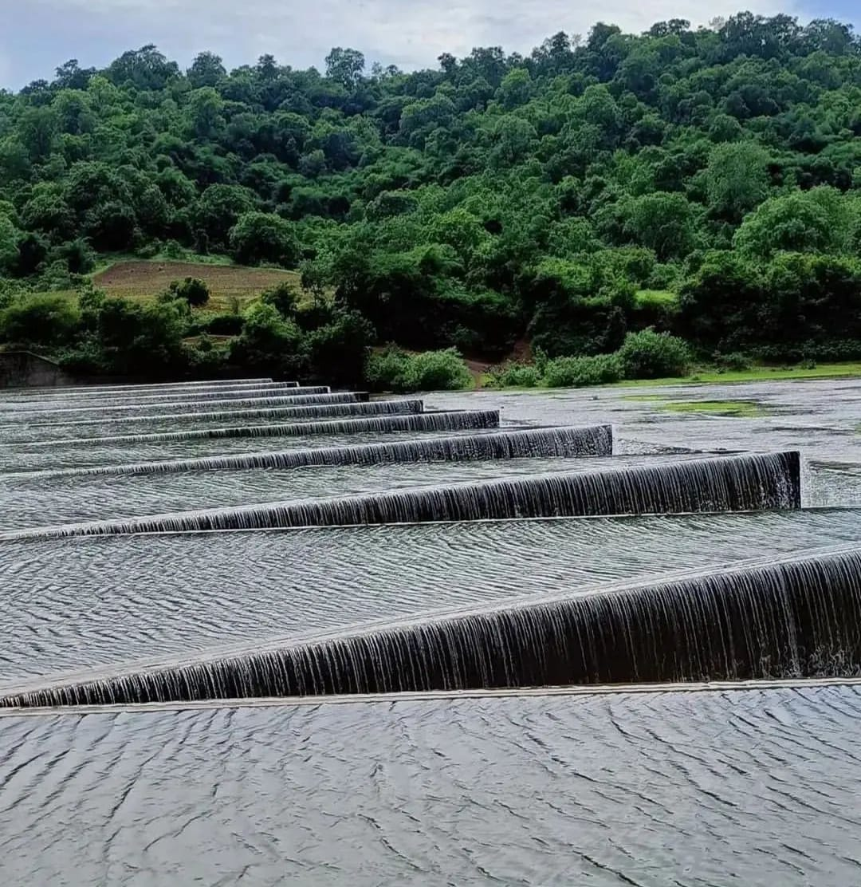
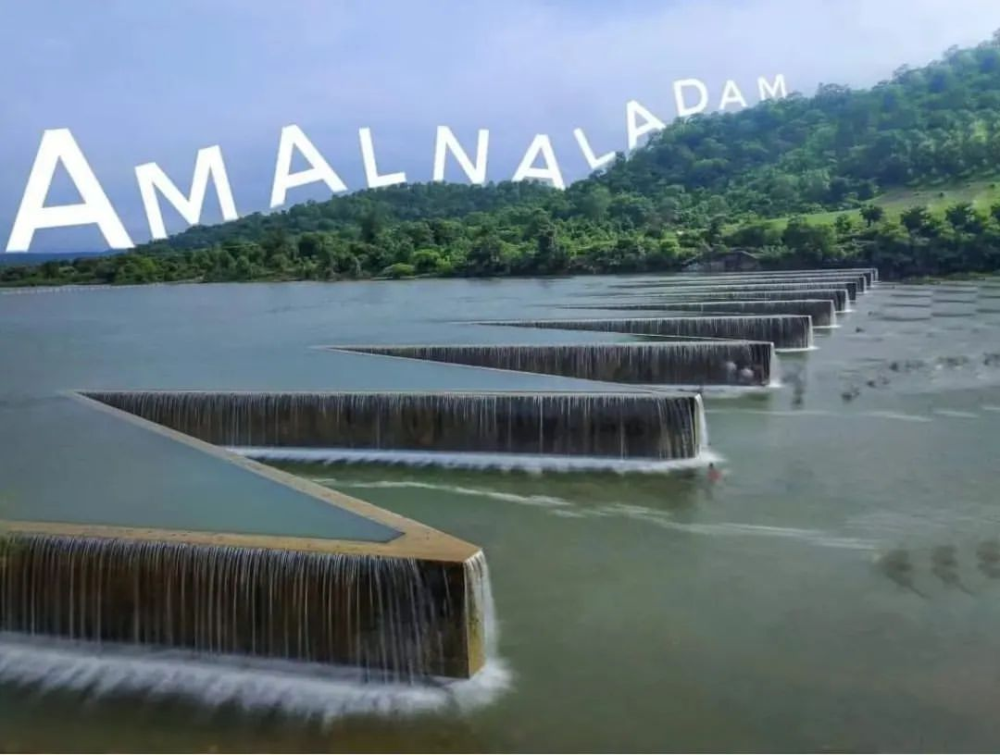

Amalnala Dam
Amalnala Dam
Amalnalla Dam, (Marathi: अमलनाला धरण) is an earthfill dam on Amalnalla river near Gadchandur Ta.Korpana Chandrapur district in state of Maharashtra in India.Amalnala dam is located at the foothills of Manikgarh hillock in Gadchandur town of Chandrapur district in Maharashtra state. The medium-scale irrigation dam is a main source of water for surrounding villages and local industries. It is also a well-known tourist spot. From last couple of years, water of the dam is turning dark green, especially, in the month of August resulting in the increased viscosity and stinking of water.
About

Official Designation of Amal-Nalla Dam Irrigation Project is " Amal-Nalla Dam , D - 01405 " . However local and popular name is " Amal-Nala Lake / Amal-Nala Talav ". Amal-Nalla Dam was constructed as part of irrigation projects by Government of Maharashtra in the year 1985. It is built on and impounds Amal nallah River , Nearest city to dam is Rajura in Chandrapur District of Maharashtra . The dam is an Earth fill Dam .